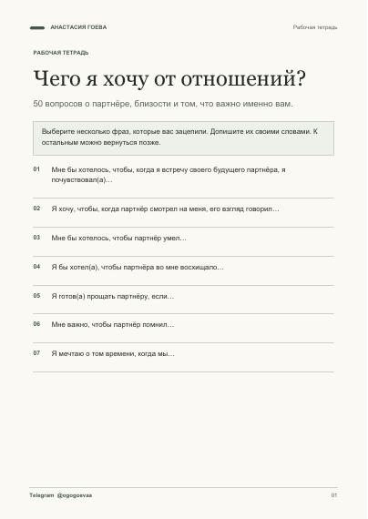
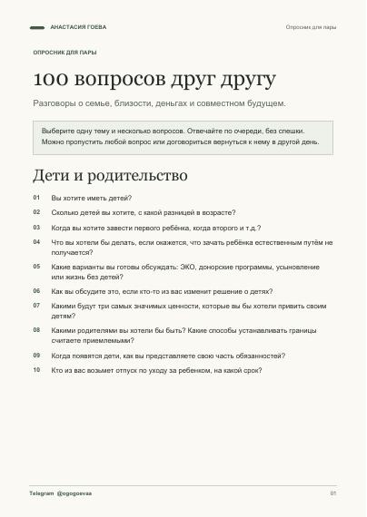
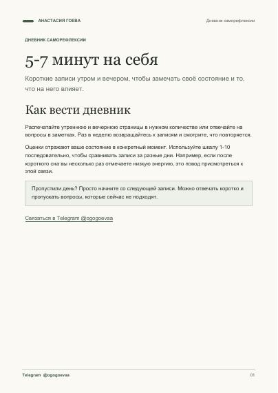
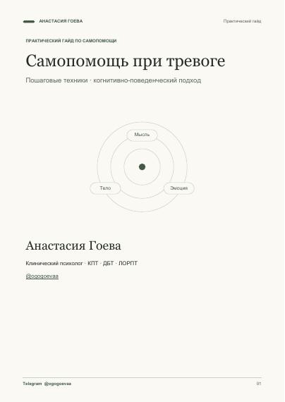

Индивидуальная встреча
50 минут · онлайн
Чтобы разобраться, что с вами происходит, и наметить, что можно изменить
5 000 ₽
Ориентир · ≈ $60 · ≈ 60 USDT
Записаться индивидуально ↗Я Анастасия Гоева, клинический КПТ-психолог и семейный психолог. Ко мне можно обратиться, когда тревога мешает жить, работа забирает все силы или в отношениях повторяется один и тот же конфликт
Я клинический КПТ-психолог и семейный психолог, веду онлайн-терапию со взрослыми и парами по всему миру. В индивидуальной работе я специализируюсь на тревожно-фобических расстройствах и трудностях пищевого поведения.
В индивидуальной терапии я опираюсь на ДБТ (диалектическую поведенческую терапию), КПТ (когнитивно-поведенческую терапию) и ЛОРПТ (личностно-ориентированную реконструктивную психотерапию). С парами я работаю в подходе эмоционально-фокусированной терапии (ЭФТ).
На встречах мы опираемся на ситуации из вашей повседневной жизни, чтобы вместе понять, что вы хотите изменить и какие небольшие шаги можно попробовать
Если хотите познакомиться со мной до первой встречи, можно начать с одного из интервью

Мой YouTube-канал о психологии, эмоциях и отношениях
Выберите тему, которая вам близка, и нажмите на «+»
Когда тревога не отпускает, панические атаки застают врасплох, а эмоции накрывают так, что трудно собраться, можно обратиться за поддержкой. Ко мне приходят и тогда, когда всё чаще сомневаются в себе, мысленно возвращаются к одному и тому же разговору или замечают, что даже любимые занятия перестали радовать.
Например, ко мне можно обратиться, если вы устали избегать метро или перелётов из-за страха либо замечаете, что подсчёт каждой калории сменяется перееданием и чувством вины.
Я работаю с выгоранием, в том числе у специалистов из IT. Я сама работала в этой сфере и знаю, как трудно переключиться, когда рабочий день закончился, а мысли всё ещё крутятся вокруг задач и даже выходные не дают почувствовать, что вы отдохнули.
Вы прокручиваете варианты будущего, перепроверяете решения и с трудом отдыхаете. Возможно, страх или паника уже влияют на то, куда вы ходите и на что решаетесь
Хочется близости, но страшно доверять или говорить о своих потребностях. Чужое настроение легко становится мерилом того, всё ли в порядке между вами
Тревога, злость, стыд или вина приходят так сильно, что сложно остановиться и выбрать, как ответить
Вы замечаете ошибки быстрее, чем успехи, сравниваете себя с другими и с трудом отстаиваете свои интересы, когда боитесь кого-то разочаровать
Вы видите знакомый сценарий: откладываете важное, избегаете разговора или соглашаетесь через силу. На встречах можно разобраться, что удерживает этот сценарий, и попробовать другие реакции
Переезд, расставание, смена работы или потеря привычных ориентиров. Можно прийти, даже если пока трудно сформулировать, чего вы хотите
Правила вокруг еды, тревога после приёмов пищи или чувство вины отнимают много сил. С трудностями пищевого поведения я работаю в рамках своей компетенции
На парную терапию можно прийти, когда вы снова и снова ссоритесь из-за одного и того же, чувствуете, что вас не слышат, и всё чаще думаете о расставании или разводе. В эмоционально-фокусированной терапии я помогаю вам заметить, как начинается этот круг ссор, и услышать, чего каждому из вас сейчас не хватает в отношениях.
Разговор о быте или будущем снова превращается в спор. Чем настойчивее один просит разговора, тем сильнее другой закрывается. Этот круг может усиливаться после переезда, потери работы, болезни или утраты
Вы пытаетесь понять, есть ли желание продолжать отношения, хотите обсудить возвращение после разрыва или ищете способ разговаривать о детях, деньгах и совместных договорённостях после развода
Открылась измена, скрытая переписка или другая часть жизни партнёра, о которой вы не знали. Можно прийти, чтобы обсудить, что произошло, что для каждого значит доверие и чего вы хотите дальше
Вы справляетесь с бытом и родительством, но реже делитесь тем, что важно, меньше чувствуете поддержку и скучаете по близости
Трудно договориться о расходах, бюджете и ответственности. Разница в доходах или зависимость от денег партнёра осложняет разговор о потребностях
Вы по-разному видите воспитание или место детей от предыдущих отношений. Можно также обратиться, если сложно говорить о переживаниях во время беременности, после её прерывания или потери, или если расходятся ваши представления о будущем семьи
Онлайн. Выберите, хотите ли вы прийти самостоятельно или вместе с партнёром
50 минут · онлайн
Чтобы разобраться, что с вами происходит, и наметить, что можно изменить
5 000 ₽
Ориентир · ≈ $60 · ≈ 60 USDT
Записаться индивидуально ↗80 минут · онлайн
Чтобы вместе разобраться, что происходит в отношениях и где застревает разговор
7 000 ₽
Ориентир · ≈ $85 · ≈ 85 USDT
Записаться на парную встречу ↗Суммы в USD и USDT ориентировочные, по пересчёту на 10 ноября 2026 года. Оплата в рублях или USDT. Точную сумму в USDT уточним в Telegram до оплаты
Напишите в Telegram и укажите, хотите ли вы индивидуальную или парную встречу. Мы согласуем время и способ оплаты. Время закрепляется за вами после полной предоплаты
Перенести встречу можно, предупредив не менее чем за 72 часа. Если отменяете встречу не менее чем за 72 часа до начала, я возвращаю оплату полностью
Встреча заканчивается в оговорённое время. Если в первые 15 минут вы не подключились и не вышли на связь, встреча считается проведённой, оплата не возвращается
Первая встреча — полноценная платная консультация. Мы знакомимся, обсуждаем запрос и намечаем первые шаги. После неё вы и я можем решить, подходит ли нам продолжать работу
Обсудим, что привело вас сейчас, что уже пробовали и чего вы ждёте от работы. Можно прийти с конкретным вопросом или начать с того, что трудно сформулировать
У каждого будет возможность рассказать, как он видит ситуацию. Вместе посмотрим, что происходит между вами в трудные моменты и как можно говорить о том, что каждому важно
Это зависит от вашего запроса и целей. Мы обсудим ожидания на первой встрече и сможем уточнять их по ходу работы
Подходящий ритм обсудим вместе с учётом вашего запроса, формата и расписания
До начала работы можно обсудить условия конфиденциальности, её границы и особенности парного формата
Напишите мне в Telegram. Перед бронированием мы уточним доступный способ оплаты в рублях или USDT и точную сумму
По возможности выберите тихое место, где можно говорить свободно, и проверьте интернет. В парном формате важно, чтобы каждый мог говорить и быть услышанным
Это совместная работа, в которой мы разбираем трудности на конкретных примерах, ищем понятные ориентиры и пробуем менять привычные реакции
Сообщите об этом на первой встрече, чтобы мы могли обсудить подходящий формат работы. Вопросы о назначении и изменении лекарств обсуждаются с лечащим врачом
В индивидуальной работе ориентиром может стать способность замечать тревогу раньше и выбирать, как действовать. В паре — возможность обсудить сложную тему, не возвращаясь сразу к привычной ссоре. Ваши ориентиры мы сформулируем вместе
Сообщите об этом до записи. Мы обсудим, какой формат возможен с учётом профессиональных границ
Если вам нужна консультация на английском или вы хотите заранее проверить, подходит ли вам платформа, уточните это в Telegram перед бронированием
Если вам важно заранее понять, смогу ли я работать с вашим форматом отношений, уточните это до записи. Для первого сообщения достаточно короткого вопроса
Мы можем вместе рассмотреть возможные решения и их последствия. Вы сможете выбрать, что подходит вам в вашей ситуации
Telegram можно использовать для записи и организационных вопросов. Если вам важно заранее обсудить общение между встречами или границы в соцсетях, поднимите этот вопрос при знакомстве
Можно сказать, что тема пока слишком трудная, попросить паузу или уточнить, зачем я задаю вопрос. Вы сами решаете, чем готовы поделиться
Да. Основные программы указаны в разделе об образовании. Вопросы о дополнительном обучении, супервизии, интервизии и личной терапии можно задать на первой встрече
Если я пойму, что вашему запросу нужен другой формат помощи или другой специалист, мы сможем обсудить это и возможные следующие шаги
Вы можете сказать о своём решении на встрече или написать мне. Если хотите, на последней встрече можно подвести итоги
Выберите один из четырёх бесплатных материалов, чтобы уже сейчас лучше понять свои желания и потребности или начать разговор о важном с партнёром

Для себя · рабочая тетрадь
50 вопросов, которые помогут понять, чего вы ждёте от отношений и что для вас важно в близости
Забрать себе
Для пары · опросник
100 вопросов о семье, ценностях и будущем, которые помогут начать разговор о важном на любом этапе отношений
Забрать себе
Для себя · дневник
Дневник саморефлексии, чтобы замечать, что влияет на ваше настроение, энергию и тревогу
Забрать себе
Для себя · практический гид
Гайд с пошаговыми упражнениями на случай, когда тревожные мысли и напряжение мешают сосредоточиться
Забрать себе
Мой Telegram-канал о психологии, эмоциях и отношениях
Мемуары создательницы диалектической поведенческой терапии о её личном опыте и о том, как он повлиял на её работу
О книге у издателя ↗Практическая книга для тех, кто хочет лучше замечать свои эмоции и выбирать, как на них реагировать
Книга о том, как ожидания и интерпретации усиливают конфликты в паре и как разговаривать о разногласиях
Напишите, хотите ли вы прийти самостоятельно или вместе с партнёром. Для записи достаточно короткого сообщения. Детали можно обсудить уже на встрече
Написать в Telegram ↗